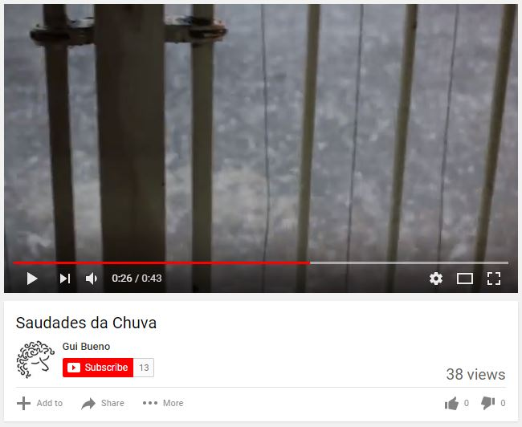
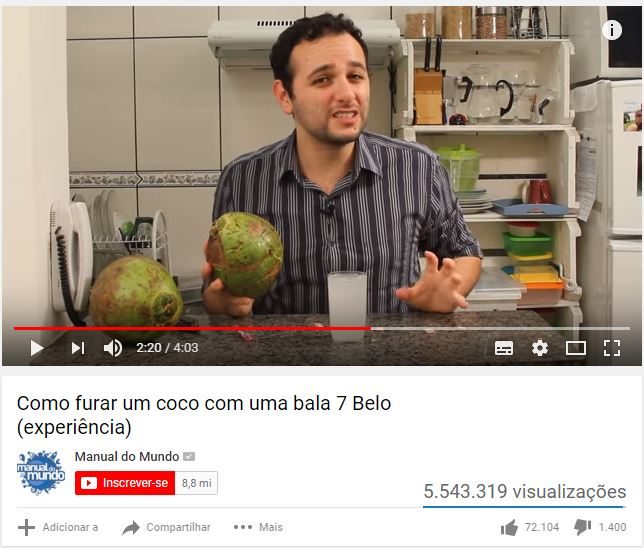

Letramento Digital
como utilizar o YouTube?
+Info
c/ Amanda Letícia & Gui Bueno
Sintaxe
Eis aqui um breve guia de possibilidades de identificação dos slides para atingir objetivos específicos. Podemos alterar a formatação dessas etiquetas e também adicionar novos recursos.
Slides de perguntas
São identificados com underline e overline e uma pergunta no centro. Assim, conseguimos bater o olho e saber que é para direcionar a pergunta para a sala e proporcionar um momento de reflexão.
Box amarelo de comandos
Assim, também sabemos com facilidade que é para reservar um tempinho para prática. Podemos deixar o slide aberto com o comando dentro da caixa, enquanto monitoramos as atividades com as pessoas.
Momento 1 [10-15min]
Apresentações
Em cada uma das aulas, podemos reservar o início para os alunos se apresentarem, recordarem os nomes uns dos outros e contarem algo a respeito de si, assim todos se abrem e se conhecem um pouquinho.
Gui e Amanda, muito prazer!
Na primeira aula, nos apresentamos e contamos quem somos, o que fazemos. De qualquer maneira, é sempre bom deixar o nosso nome no slide inicial das aulas, para que possam consultar caso esqueçam.
Parte Básica
- Nome, idade
- Local de nascimento
Em todas as aulas, podemos pedir que contem essas informações, para que relembrem. Nós também participamos da apresentação, tanto para dar um exemplo como para que eles nos conheçam também.
Parte Divertida
- Algo que faço bem.
- Algo que gosto muito de fazer.
- Um plano para o futuro.
- Outra atividade que fez/faz/fará no Sesc.
Estas são apenas possibilidades, mas vale ressaltar que é importante sempre elevar a moral dos alunos, focar em fatos positivos e em planos para o futuro, principalmente ao lidar com a terceira idade.
Parte Educativa
- Meu lugar favorito em São Caetano é ___.
- Meu artista favorito é ___.
- Meu prato de comida favorito é ___.
- Algo que gostou de ter aprendido.
Além de trazer perguntas divertidas, podemos relacionar as perguntas com conteúdos das aulas. Se vamos buscar vídeos de música, podemos começar conversando sobre artistas favoritos e entrar no clima da aula.
Momento 2 [10min]
Sobre o curso
Em cada encontro, após a apressentação, nós podemos trazer informações sobre o curso, como o planejamento de conteúdos dessa aula e do curso, dicas de outros cursos, lista de presenças e etc.
Diretrizes
- Prática e discussões estruturadas.
- Construção colaborativa.
- Abertura para perguntas e respostas.
- Vamos conversar e praticar bastante.
Explicação de como funcionam as aulas, assim todos ficam sabendo das nossas intenções e podem se sentir menos ansiosos com o desenrolar do curso.
Boas práticas
- Não entendeu, não escutou... pergunte!
- Atitude positiva ao aprender!
- Ensine a aprenda com colegas.
- Corrigir os outros?
Boas práticas, que sugerimos e nas quais acreditamos. Vale sempre reforçar nas aulas, para que esses comportamentos sejam estimulados e naturalizados!
Revisão
O que foi explicado, debatido e exposto na(s) última(s) aula(s), só para reforçar os conteúdos, contextualizar para quem faltou ou chegou atrasado e nos inserir em uma linha de continuidade didática.
Hoje
- Apresentação
- Discussões Estruturadas
- Prática Conjunta
- Prática de Desafios
Exemplo de como podemos dizer que nossa aula está estruturada.
Momento 3 [10min]
Saberes Coletivos
Para conhecermos melhor os nossos alunos e propor atividades que façam sentido, podemos fazer pesquisas de sala em dois formatos: pesquisa de sala e reflexões abertas.
Exemplo 1
- Você sabe ligar um computador?
- Você tem um computador em casa?
- Você já acessou a internet?
- Você tem o hábito de acessar a internet?
- Você tem medo de usar o computador?
- Você sabe fazer pesquisas no Google?
- Você assiste a vídeos no computador?
- Você sabe acessar um site?
- Você possui uma conta de e-mail?
- Você usa o WhatsApp?
Exemplo 2
- Você já acessou a internet?
- Você tem o hábito de acessar a internet?
- Você tem acesso à internet em casa?
- Você tem acesso à internet em seu celular?
- Você utiliza o WhatsApp?
- Você sabe fazer uma pesquisa no Google?
- Você sabe acessar um site?
- Você possui um endereço de e-mail?
- Você tem o hábito de enviar e receber e-mails?
- Você possui uma conta no Facebook?
Por que a maioria das pessoas usa o WhatsApp?
Respostas
- É mais barato um celular que um computador.
- Não é dificil usar o WhatsApp. É mais simples!
- É necessário usá-lo para fazer muitas coisas.
Na aula seguinte à pergunta discutida verbalmente, podemos trazer uma resposta estruturada dos principais pontos aos quais chegamos, a título de revisão e de confirmar nossa escuta ativa.
Por que às vezes temos medo de usar o computador?
Respostas
- Há apenas 1 computador para mais de uma pessoa.
- Medo de "estragar" ou de apagar algo de alguém.
- Também há o medo de "pegar" vírus e cair em golpes.
Melhor ainda quando conseguimos relacionar as perguntas de reflexão com conteúdos que a nossa aula pretende abordar. Por exemplo, após falar de medo, podemos tratar de cuidados e scams.
NÃO PRECISA TER!
- É quase sempre possível voltar ou reverter uma ação.
- O computador vai confirmar antes de fazer algo grave.
- Resolver problemas às vezes é um exercício divertido.
CUIDADO, SIM!
- Mundo online é tão real quanto o mundo nas ruas!
- É bom estar atento ao compartilharmos informações.
- Se algo parece bom demais para ser verdade, ...
... é porque não é verdade!
Imagine se fosse na rua!
video scams
Buscar exemplos de golpes versão vídeo, do tipo as propagandas de "ganhe R$X mil sem sair de casa" e conteúdos parecidos.
Momento 4 [25min]
Teoria Aula 1 [1/3]
Sobre Letramento Digital
Letramento Digital,
o que é isso?
1997

1997
1997
1997
2017
2017
2017
Em 2019:
- Ser uma pessoa online
- Comportamento, etiqueta, cuidados.
- Ferramentas e instrumentalização.
Momento 4 [25min]
Teoria Aula 1 [2/3]
Sobre Usuários Geradores de Conteúdo
Web 2.0
Usuários geradores de conteúdo.
O início da internet...
- 1969: 4 computadores conectados
- 1986: 5,000 computadores conectados
Que grupos compunham esses 5,000 computadores?
Centros de Inteligência
Universidades
Agências de Tecnologia
Empresas de Tecnologia
Empresas de Tecnologia
Só para quem tivesse condições...
- Estar na internet era muito caro.
- Além disso, extremamente difícil.
- Códigos complexos e necessários.
Primeiros websites a partir de 1991
Facilitando para que as pessoas pudessem acessar.
Como eram esses sites?
Modelo Folheto
Catálogos de cada empresa.
Exemplo: Pizza Hut
- Somos a Pizza Hut e nossa pizza é boa.
- Temos os seguintes sabores: ...
- Os preços variam entre ___ e ___.
- Para fazer um pedido, ligue para ___.
- Veja as fotos das nossas pizzas.
Exemplo: MTV
- Somos a MTV, o canal de música na TV.
- Nossos programas são os seguintes: ...
- Os horários de cada um são estes.
- Para assistir aos programas, ligue no canal ___.
- Veja as fotos das nossos artistas.
Você podia acessar informações...
... que alguém já havia colocado online.
Web 1.0
- Informações,
- Cursos,
- Jogos,
- Notícias,
- ...
Web 2.0
VOCÊ também produz o conteúdo
Sites na Web2.0
- Dinâmicos
- Interativos
- Expansíveis
Redes Sociais
Datas
- ~2000: primeiros sites desse tipo.
- 2004: termo é usado pela primeira vez.
- 2005: boom desses sites e redes sociais.
- 2006: novo formato já estabelecido.
Pessoa do Ano da Revista Times

Destaques
- Blogs
- Wikipédia
- Youtube
Momento 4 [25min]
Teoria Aula 1 [3/3]
Sobre YouTube
Youtube
Muito mais que televisão.
Definição em 1 linha
Serve para ver vídeos sobre quase tudo.
Vídeos são cada vez mais assistidos na Internet!
História
- Fundado em 2005, por 3 amigos.
- Vendido à Google em 2006, por US$1.65bi.
- 70 mil vídeos assistidos por segundo.
Primeiro e mais importante...
se pronuncia (no Brasil): iú-TU-bi
Vídeos sob demanda
Você escolhe exatamente ao que e como assistir.
Quais vídeos?
Há muito conteúdo sobre quase tudo!
- Músicas e shows.
- Entrevistas.
- Informações e dicas.
- Discussões.
- Cursos, aulas, tutoriais.
- ...
https://www.youtube.com.br/
Vamos para a prática?
Todos juntos, formato ditado!
Momento 5 [25min]
Prática Coletiva
Pode também ser chamada de "experiência guiada" ou "prática em ditado" e tem o objetivo de que a gente dê instruções e comandos verbais para que todas as pessoas cheguem a um mesmo objetivo em comum. Screenshots ajudam.
YouTube 101
- Acessar
- Buscar
- Tocar
- Controles
Controles

- Play/Pause
- Volume
- Indicador de tempo
- Observe
- O que há na tela?
- Teclas importantes
- Onde escreve é onde pisca
Diretrizes
- RUA PELOTAS, 141 ou SESC VILA MARIANA?
- Desafios: encontre sua casa
Muitas perguntas e pequenos desafios, como:
Momento 6 [25min]
Prática Desafios
Neste momento, os alunos podem ficar utilizando o computador e navegando no YouTube livremente, com nossas instruções e acompanhamento, guiados por práticas orientadas e "infinitas" para acabar a aula.
Práticas
- Propagandas Antigas Anos 50
- Ballet O Quebra-Nozes
- Drauzio Varella
- Como dormir melhor
- Furacão Irma
- Curso de computador
- Programa do Jô Roberto Carlos
- Como tocar violão
- Vila Mariana
- Elis Regina Jogo da Verdade
Mais práticas
- Show do ____
- Entrevista com ____
- Como fazer ____
- Matéria sobre ____
- Curso de ____
- Sesc 24 de Maio
Mais possibilidades
- Qual a temperatura em ?
- Resultado último jogo do ____?
- Qual a capital da ____?
- Quantos habitantes tem em ___?
- O que significa ?
Lote de Exemplos 1
- Quantas unidades tem o Sesc?
- Como fazer bolinho de chuva?
- Como acabar com a caspa?
- Como Albert Einstein morreu?
- Por que damos risadas?
- Comer leite com manga faz mal?
- Qual e o maior país do mundo?
- Quantos países ha na América do Sul?
- Letramento Digital
- Notícias Terceira Idade
- Notícias Furacão Irma
- Receita torta de limão
- Gripe prevenção
- Melhores Restaurantes Vila Mariana
- Horario de funcionamento Mercadão Municipal
- Programação Auditório Ibirapuera
- Furacão Irma
Lote de Exemplos 2
- Prefeitura São Paulo
- Letramento Digital
- Novelas antigas
- Deserto Saara
- Sede Google
- Maior montanha russa
- Paisagens brasileiras
- Sesc Vila Mariana
- Roberto Carlos
- Vila Mariana
- O Clone
- Eclipse Total
- Grécia
- Gilberto Gil
- Anfíbios
- Fátima Bernardes
- Grupo sanguíneo
- Gal Costa
Possibilidades
Estes conteúdos já estão prontos de uma maneira estruturada para a outra edição do curso. Não acredito que necessitamos abordá-los dentro do escopo do curso, mas podemos assim fazê-lo, caso necessário.
Produção de Conteúdo
o que a internet é hoje!
Monetização
- Qualquer pessoa pode incluir um vídeo no Youtube.
- Qualquer pessoa pode assistir a um vídeo no Youtube.
- Com tanta gente visitando, o Youtube vende anúncios.
- Quem é muito assistido, ganha uma parte desse dinheiro.
Exemplo
Exemplo

Você sabe o que é um YouTuber?
Pessoa que trabalha fazendo vídeos para o YouTube.
Estudos de Casos
Manual do Mundo
Drauzio Varella

Lucas Lira

Não é sério TV

Canal do Pirula

Fala, Bandana!

JoutJout

Canal Boom

Primitive Technology

Mais opções
- Drauzio Varella
- Globo
- Receitas
- Sesc
A quais conclusões chegamos?
Todo mundo quer ser visto,
... para poder ganhar dinheiro,
... por isso, há tanto conteúdo!
O que não há no YouTube?
Alguns conteúdos protegidos por direitos autorais*.
(*às vezes, há!)